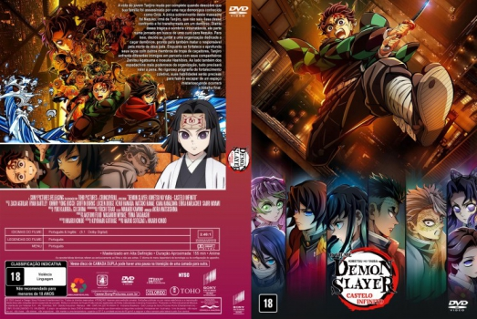

![link to Demon Slayer: Kimetsu no Yaiba Castelo Infinito [Autorado] on Rotten Tomatoes](../img/tomatoes.png)
![link to Demon Slayer: Kimetsu no Yaiba Castelo Infinito [Autorado] on TheMovieDb](../img/themoviedb.png)

Outro Título:劇場版「鬼滅の刃」無限城編 第一章 猗窩座再来
País:Japan, 156 minutos
Idiomas falados:Japonês, Português
Gênero(s):Animação, Ação, Fantasia
Diretor(s):Haruo Sotozaki
Escritor(es):Hikaru Kondô, Koyoharu Gotouge
Codec:MPEG-2 (DVD)
Número: 5956


Certificado:18
Sinopse:
Enquanto os membros dos caçadores e os Hashira participavam de um rigoroso programa de fortalecimento coletivo, conhecido como Treinamento dos Hashira, em preparação para a batalha final contra os demônios, Muzan Kibutsuji aparece na Mansão Ubuyashiki. Com a vida do líder da organização em risco, Tanjiro e os Hashira correm até o quartel-general, mas acabam sendo lançados, pelas mãos de Muzan, em uma queda profunda rumo a um espaço misterioso para um confronto final, o Castelo Infinito.
Elenco:
Tipo de mídia: DVD5,
Legendas: Português, Sem Legendas
Alugado: Não
Tela: Anamorphic Widescreen